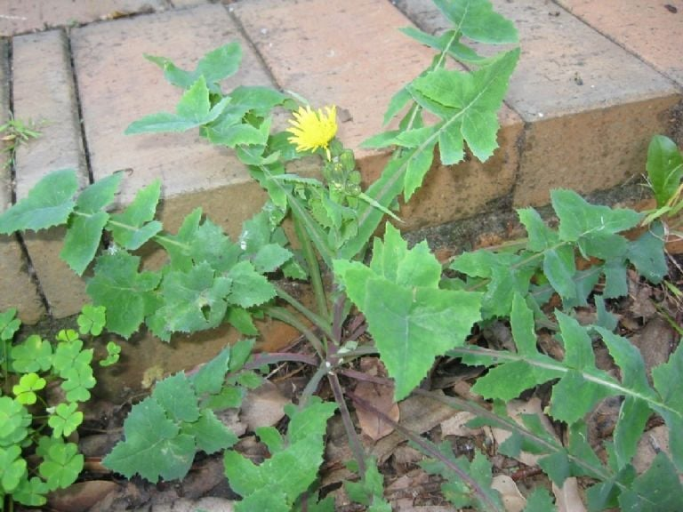

Ayuntamiento de Senés
JARDIN BOTANICO DE ESPECIES AUTOCTONAS DE SENES

Sonchus oleraceus

La cerraja (Sonchus oleraceus) es una planta herbácea anual muy común en el ecosistema mediterráneo, especialmente en terrenos alterados, cultivos y zonas nitrificadas. Presenta un crecimiento rápido y una gran capacidad de adaptación, lo que le permite colonizar suelos removidos con facilidad.
Sus tallos son erectos, huecos y ramificados, pudiendo alcanzar hasta un metro de altura en condiciones favorables. Sus hojas son lobuladas, tiernas y de color verde claro, y al ser cortadas desprenden un característico látex blanquecino. Sus flores, de color amarillo brillante, se agrupan en capítulos y recuerdan a las del diente de león, atrayendo a numerosos insectos polinizadores.
La cerraja se distribuye ampliamente por la región mediterránea y otras zonas templadas del mundo, donde crece de forma espontánea en campos cultivados, cunetas, huertos y terrenos ricos en nutrientes. Es especialmente frecuente en suelos nitrificados, donde encuentra condiciones óptimas para su desarrollo.
La cerraja posee propiedades digestivas, depurativas y ligeramente diuréticas. Tradicionalmente se ha utilizado como planta comestible, consumiéndose sus hojas jóvenes en ensaladas o cocinadas, aportando vitaminas y minerales beneficiosos para el organismo.
La cerraja simboliza la adaptación y la resiliencia, ya que es capaz de crecer en condiciones adversas y en terrenos alterados. Representa la capacidad de la naturaleza para regenerarse y ocupar espacios degradados.
En Senés, la cerraja ha sido conocida como una planta silvestre comestible, especialmente cuando es joven y tierna para ensaladas por su sabor amargo. Los cazadores las recolectaban como comida para las perdices.
Es una hierba diurética y laxante.
La cerraja florece principalmente en primavera y verano, aunque puede hacerlo durante gran parte del año en condiciones favorables. Sus flores amarillas contribuyen al mantenimiento de insectos polinizadores en el ecosistema agrícola.
El látex blanco que desprende al cortarse es una característica común en muchas especies de su familia. Además, sus semillas están adaptadas para dispersarse con el viento, lo que facilita su rápida expansión en el entorno.